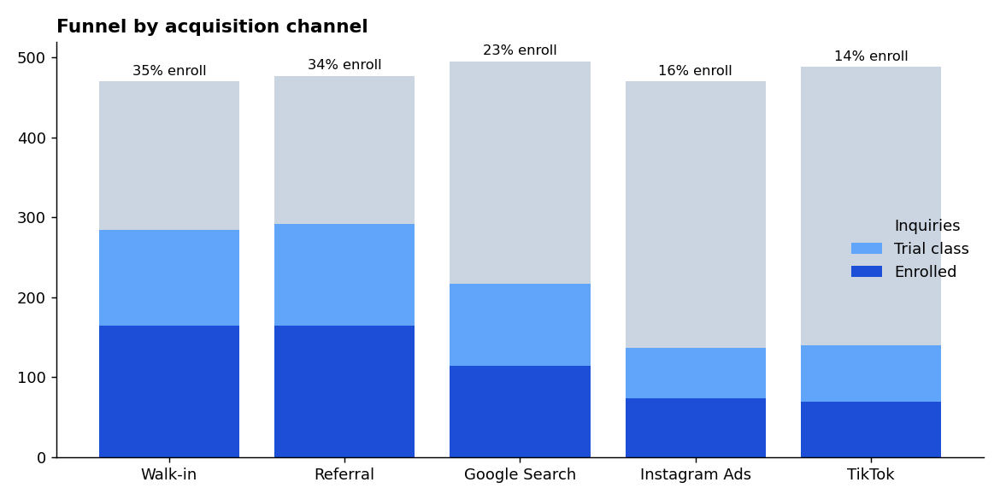

PROJECT 01
Customer & revenue retention cohorts
Order lines from a fictional online plant shop, grouped by first-order month. Shows how many customers
return and how much of their first-month revenue is kept over the following year, by city.
Average M6 net revenue retention: ≈35%

PROJECT 02
Query optimization on 3 million sensor readings
One business question, three approaches. Each one must return exactly the same numbers before its speed counts.
1. naive full scan ~600 ms 1x
2. sargable filter + covering index ~150 ms 4x
3. pre-aggregated hourly table 8–20 ms 30–75x same result
(timings vary by run and machine; results are checked to be identical)
PROJECT 03
Daily sales change alert
Compares yesterday with the same weekday last week, lists the store and item combinations that moved
the total most, and flags stores outside 3 standard deviations. Output is a chat-ready message.
*Kopi Senja daily sales — Tue 30 Jun 2026* (vs Tue 23 Jun)
Total revenue Rp25.11jt (+8.6%, Rp2.00jt)
Anomalies (beyond 3 sd of the same weekday):
• Dago: Rp1.05jt, -7.2 sd from normal
• Sanur: Rp6.00jt, +4.0 sd from normal
PROJECT 04
Lead funnel & re-engagement list
An event log from a fictional language school is rebuilt into one journey per lead. Leads that went
cold, were lost after a trial, or dropped out are scored and given a suggested message.
Referral and walk-in leads enroll at 2.5x the rate of social ads · 1,271 leads prioritized

PROJECT 05
Guest feedback classification
Explainable keyword rules handle most hotel reviews. Reviews with no keyword or a tie go to an LLM with a
fixed rubric. Precision and recall are measured per topic against hand-labelled data.
85% decided by rules at 94% accuracy · 15% routed to the LLM
PROJECT 06
Client data cleaning, subscription status & account-manager assignment
Two coworking branches export payments with different date formats, currencies and name spellings.
The pipeline standardizes them, tracks each client as new, active, churned, reactivated or churned again,
and assigns paying clients to account managers by branch, balancing revenue within capacity.
106 name spellings → 24 clients · 8 duplicates removed · over-capacity accounts flagged